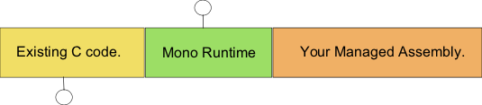

The Mono runtime can be embedded into an existing C, C++ or Objective-C based application. Embedding allows developers to keep their existing investment on their current code base while extending its functionality with CIL-based components. This is a key concept: to take advantage of Mono, you do not need to rewrite your software from scratch: you can keep everything you have today, and write new code in Mono, and have both universes communicate with each other.
Embedding is also known as "hosting" to developers coming from the .NET Framework.
Embedding is particularly useful when you have an existing application, but you would like to extend its functionality either by reusing third-party Mono, .NET components or Java components, or enable developers to "script" components of your application with any of the .NET or Java supported languages.
The embedding API of Mono requires some little knowledge about C and C#. You might not need to read this entire document, it depends very much on the needs of your application.
P/Invoke allows Mono developers to call from the managed world APIs that are exposed by the C universe and provides various automatic marshalling mechanisms to convert information back and forth between the managed world and the unmanaged world. For example, the UTF-16 based strings that are used by Mono are transparently transformed into UTF-8, or UCS-2 encodings by the runtime. Structures are mapped back and forth and so on. For more details on the P/Invoke platform, you are encouraged to read the Platform Invocation.
Typically you would begin with an existing C application:

Embedding links the mono runtime with your application, so your application now has a full virtual execution system running side-by-side with it. This is done by linking `libmono' with your application (we will cover the details about this later). Once linked, the address space of your application would look like this:

The Mono embedded API exposes the Mono Runtime to the existing C code. The interface exposed by the Mono runtime lets the developer control various aspects of the runtime and inspect the code that runs on the CIL world inside the Mono runtime.
Once you have the Mono runtime initialized, the most interesting thing to do is to load some managed code, possibly written in C#, Java, Basic or any other of the supported languages that the Mono runtime supports, this will result in an address space like this:

But to make the system more interesting than just load some managed code and have it run side-by-side with your code, Mono provides ways of registering callbacks in the C code that can then be invoked by the managed world.
Like this:
Now your existing C code can trigger methods in the managed world, and the managed world can react and notify of any interesting changes to the C code:

The loaded assembly can be as simple as you want, some common things that developers have done:
Since the Mono framework is a fairly powerful framework there are almost no limitations on the different kind of applications that you can create with the above setup.
Next section: The Basics
p>